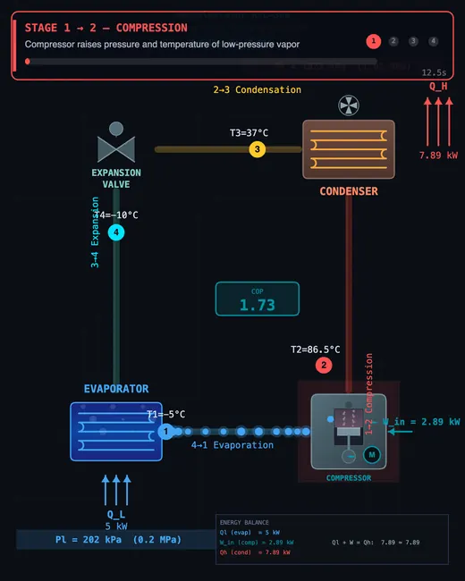
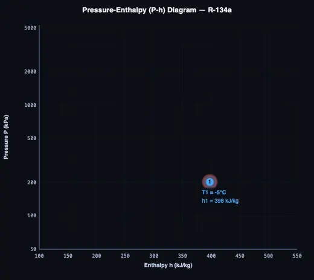

Refrigeration Cycle Simulator
Vapor Compression • P-h Diagram • COP • 4 Refrigerants — Simulate • Explore • Practice • Quiz
Display Controls
Display Controls
| # | Question | Result |
|---|
1 Overview
The Refrigeration Cycle Simulator models the vapor compression refrigeration cycle — the most widely used cooling technology in the world. It features an animated system schematic showing refrigerant flowing through the four main components (compressor, condenser, expansion valve, and evaporator), a real-time pressure-enthalpy (P-h) diagram with the saturation dome and cycle path, and comprehensive thermodynamic calculations including COP (Coefficient of Performance), cooling capacity, compressor power, and discharge temperature.
The simulator supports four refrigerants (R-134a, R-410A, R-22, and R-290) and lets you adjust evaporator temperature, condenser temperature, subcooling, superheat, compressor efficiency, and cooling capacity. It is designed for HVAC engineering students, refrigeration technicians, mechanical engineering trainees, and instructors teaching vapor compression cycles and refrigerant selection. A ton of refrigeration equals 3.517 kW of cooling capacity.
2 Configuring the System
The simulator opens in Simulate mode showing a dual-canvas layout. The left canvas displays an animated refrigeration system schematic with the compressor, condenser, expansion valve, and evaporator. The right canvas shows the P-h diagram with the saturation dome, state points, and cycle path. Below, sliders control: refrigerant selection, evaporator temperature (−30 to 10 °C), condenser temperature (25 to 55 °C), subcooling (0–15 K), superheat (0–20 K), compressor efficiency (50–95%), and cooling capacity (0.5–5.0 kW). Each slider also has a companion number input for direct value entry.
Use the Preset dropdown to load a typical scenario instantly: Domestic Refrigerator, Air Conditioning, Heat Pump, or Industrial Freezer. Each preset sets evaporator and condenser temperatures to industry-standard values. You can fine-tune sliders after selecting a preset.
Click Start to begin the staged animation. The simulator walks through each process individually — Stage 1→2 (compression), 2→3 (condensation), 3→4 (expansion), then 4→1 (evaporation) — highlighting each process on both the machine schematic and the P-h diagram simultaneously. After all four stages complete, the cycle runs continuously. Use the Anim. Speed slider (0.3×–3×) to slow down or speed up the animation. Readout cards below display COP, cooling capacity, compressor power, heat rejected, mass flow rate, pressure ratio, quality at the expansion valve exit, and compressor discharge temperature.
3 Running the Cycle
The P-h diagram is the key analytical tool. The horizontal axis shows specific enthalpy (kJ/kg), the vertical axis shows pressure on a logarithmic scale, and the dome-shaped curve represents the saturation boundary. During staged animation, the P-h diagram builds progressively — each process line appears as its stage runs, with a traveling dot showing the current refrigerant state. After the first complete cycle, the saturation dome becomes visible; toggle it on or off with the Sat. Dome button at any time.
The machine canvas shows a stage progress banner at the top with the current process name (e.g. “STAGE 2→3 — CONDENSATION”), a time progress bar, and completion dots for all four stages. Each component glows during its active stage: red for the compressor, orange heat waves for the condenser, yellow for the expansion valve, and blue shimmer for the evaporator.
Experiment with the sliders to understand key relationships. Lowering the evaporator temperature widens the pressure ratio and reduces COP. Increasing superheat moves Point 1 further into the superheated region. Reducing compressor efficiency increases work input and discharge temperature. Compare refrigerants by switching between R-134a, R-410A, R-22, and R-290 to see how dome shape, pressures, and COP differ. Use ↓ CSV to export all state point data, ↓ PNG to save the P-h diagram, or right-click the diagram for more options. Toggle SI / IMP to switch readout units between SI and Imperial.
4 The Underlying Theory
Switch to Explore mode to study concept cards across multiple categories covering the fundamentals of vapor compression, individual component operation, refrigerant properties, and environmental impact. Each card includes clear explanations, diagrams, and numerical examples.
Key topics include the four cycle processes (compression, condensation, throttling, evaporation), the definition and significance of COP, the P-h diagram as an analysis tool, subcooling and superheat effects on system performance, the difference between ODP (ozone depletion potential) and GWP (global warming potential), and the phase-out timeline for high-GWP refrigerants. The explore canvas provides additional diagrams to visualise concepts like the saturation dome structure, T-s diagram representation, and component energy balances.
5 Try a Problem
Practice mode generates randomised refrigeration cycle problems. You might be asked to calculate the COP given evaporator and condenser enthalpies, find the mass flow rate for a given cooling capacity, determine the compressor power from the enthalpy difference and mass flow rate, or compute the heat rejected by the condenser. Enter your answer, click Check for instant feedback, or click Show Solution for a step-by-step walkthrough. Your score is tracked to measure progress.
Quiz mode presents five questions per session combining conceptual and numerical problems. Topics include identifying the isenthalpic process, ranking refrigerants by COP, calculating pressure ratios, understanding the role of superheat and subcooling, and comparing the environmental impact of different refrigerants. After completing the quiz, review your results and revisit specific topics in Explore mode.
6 Engineering Notes
- The COP = Qevap/Wcomp tells you how many kilowatts of cooling you get per kilowatt of compressor work. Typical values are 2–5 for well-designed systems. Higher COP means better efficiency.
- Increasing subcooling improves COP slightly by increasing the enthalpy difference in the evaporator without increasing compressor work. Try adjusting the subcooling slider to see this effect.
- Lowering the evaporator temperature or raising the condenser temperature increases the pressure ratio and reduces COP. This is why air conditioners work harder (and less efficiently) on extremely hot days.
- Compare all four refrigerants under identical conditions. R-290 (propane) often has the best COP but is flammable. R-410A operates at higher pressures than R-134a. R-22 is being phased out due to ozone depletion.
- Watch the quality at Point 4 (expansion valve exit). Lower quality means more liquid enters the evaporator, which is desirable for maximum cooling effect.
- Use this simulator alongside the Thermodynamics Cycles Simulator to compare the vapor compression cycle with heat engine cycles like Carnot and Otto, understanding the reversed cycle concept.
What is the Vapor Compression Refrigeration Cycle?

The vapor compression refrigeration cycle moves heat from a cold space to a warm environment using a compressor, condenser, expansion valve, and evaporator. A refrigerant absorbs heat at low pressure in the evaporator and rejects it at high pressure in the condenser. COP (Coefficient of Performance) measures how efficiently the cycle converts compressor work into useful cooling.
What do the four components of the refrigeration cycle do?
The compressor raises pressure and temperature of refrigerant vapor — this is the work input (Wcomp). The condenser rejects heat QH to the surroundings as refrigerant condenses to liquid. The expansion valve drops pressure isenthalpically, producing a cold two-phase mixture. The evaporator absorbs heat QL from the cooled space as refrigerant evaporates. COP = Qevap / Wcomp measures overall efficiency.

How does the P-h diagram represent the refrigeration cycle?
The pressure-enthalpy diagram plots each process as a distinct line: 1→2 curves upward (isentropic compression), 2→3 runs horizontally at high pressure (condensation), 3→4 drops vertically (isenthalpic expansion), and 4→1 is horizontal at low pressure (evaporation). The saturation dome divides the chart into subcooled liquid (left), two-phase mixture (inside dome), and superheated vapor (right). This simulator draws the cycle in real time as you adjust conditions.
Which refrigerant gives the best COP — R-134a, R-410A, R-22, or R-290?
Under identical conditions, R-290 (propane) typically achieves the highest COP due to excellent thermodynamic properties, followed by R-134a, R-22, and R-410A. However, R-290 is flammable (A3 safety class). R-22 is being phased out under the Montreal Protocol (ODP = 0.055). R-134a has zero ODP but GWP = 1430. R-410A operates at higher pressures with GWP = 2088. Use the simulator to compare COP across all four under your specific conditions.
What is a good COP for a refrigeration system?
A COP between 2 and 5 is typical for well-designed vapor compression systems. Domestic refrigerators achieve COP ≈ 1.5–2.5; air conditioners reach COP ≈ 3–5. The Carnot COP = TL/(TH−TL) in Kelvin sets the theoretical maximum. Smaller temperature lift, higher compressor efficiency, and optimised subcooling all improve COP.
What operating parameters affect refrigeration system efficiency?
| Parameter | Effect on COP | Typical Range |
|---|---|---|
| Evaporator temperature | Higher = better COP | −30 to +10 °C |
| Condenser temperature | Lower = better COP | 25 to 55 °C |
| Subcooling | More = slightly better COP | 0 to 15 K |
| Superheat | Affects discharge temperature | 0 to 20 K |
| Compressor efficiency | Higher = better COP | 50 to 95 % |
Which refrigerant is replacing R-22 and R-134a?
R-22 is being replaced by R-410A and R-32 for air conditioning, and R-404A for commercial refrigeration. R-134a in automotive and centrifugal chillers is transitioning to R-1234yf (GWP = 4) and R-513A. Natural refrigerants like R-290 (propane), R-717 (ammonia), and R-744 (CO2) are growing in commercial applications due to near-zero GWP. Regulations under the Kigali Amendment are accelerating HFC phase-downs globally.
Worked COP — A Household Freezer Pulling 100 W of Cooling
A small household freezer holds the cabinet at −18 °C while the kitchen sits at 25 °C. Refrigerant R-134a circulates in a vapour-compression cycle. Use the P-h diagram in the simulator with the following readings at the four state points:
| State | Process from previous state | P (bar) | h (kJ/kg) | Phase |
|---|---|---|---|---|
| 1 | (exit of evaporator) | 1.0 | 240 | saturated vapour at −26 °C |
| 2 | after isentropic compression | 9.0 | 280 | superheated vapour |
| 3 | after condensation | 9.0 | 105 | saturated liquid at 35 °C |
| 4 | after isenthalpic expansion | 1.0 | 105 | two-phase, x ≈ 0.27 |
From these enthalpies the cycle performance follows in three lines:
| Quantity | Formula | Working | Result |
|---|---|---|---|
| Refrigerating effect (per kg refrigerant) | qL = h1 − h4 | 240 − 105 | 135 kJ/kg |
| Compressor work (per kg) | wc = h2 − h1 | 280 − 240 | 40 kJ/kg |
| Coefficient of performance | COP = qL/wc | 135/40 | 3.38 |
| Mass flow for 100 W cooling | ṁ = QL/qL | 100/135000 | 0.74 g/s = 2.7 kg/h |
| Compressor input power | Wc = ṁ·wc | 0.00074 × 40000 | 29.6 W |
So 100 W of cooling at the freezer costs ~30 W at the wall — the system moves about three units of heat for every unit of electrical work. This is the value you should expect on the energy label of a real domestic freezer: COP of 3−4 for moderate temperature lifts, 1.5−2.5 for deep-freeze applications below −30 °C, and over 5 for water-source heat pumps with small temperature lifts.
Reading the P-h Diagram — What Each Line Means
The pressure-enthalpy diagram is the engineering tool for refrigeration analysis. Each line is meaningful:
- Bell-shaped saturation dome — the boundary between liquid (left), two-phase mixture (inside), and vapour (right). The peak is the critical point; above it, gas and liquid are indistinguishable. Beyond the critical point the simple vapour-compression cycle no longer works — this is why R-744 (CO2, Tcrit = 31 °C) systems use a transcritical cycle.
- Constant-pressure lines — horizontal. Condensation and evaporation happen at constant pressure (and inside the dome, constant temperature).
- Constant-temperature lines — outside the dome they bend steeply downward; inside the dome they coincide with constant-pressure lines.
- Constant-entropy lines — almost vertical in the superheat region. The ideal compression process 1→2 follows one of these (isentropic).
- Constant-quality lines (x = 0.1, 0.2…) — sub-divisions inside the dome marking the vapour fraction. Point 4 after the expansion valve sits somewhere here.
Refrigerant Choice — What Replaced What and Why
Refrigerant choice has been driven for three decades by environmental constraints layered on top of thermodynamic requirements. The headline metrics are ozone depletion potential (ODP), where any non-zero value is now banned in new equipment under the Montreal Protocol, and global warming potential (GWP), where regulators are progressively excluding fluids above set thresholds:
| Refrigerant | ODP | GWP (100 yr) | Typical use | Notes |
|---|---|---|---|---|
| R-12 (CFC) | 1.0 | 10,200 | Old refrigerators, car AC pre-1994 | Banned for new equipment 1996; ozone destroyer |
| R-22 (HCFC) | 0.05 | 1,810 | Older split AC, supermarkets | Production phased out in EU 2010, US 2020 |
| R-134a (HFC) | 0 | 1,430 | Car AC 1994–2017, centrifugal chillers | EU mobile-AC ban 2017; F-gas phase-down |
| R-410A (HFC blend) | 0 | 2,088 | Residential AC and heat pumps 2010−present | Higher pressure than R-22; phase-down in EU by 2025 |
| R-1234yf (HFO) | 0 | 4 | Car AC post-2017 | Mildly flammable; preferred under Kigali Amendment |
| R-32 (HFC) | 0 | 675 | Modern split AC (replacing R-410A) | Lower GWP, slightly flammable (A2L) |
| R-290 (propane) | 0 | 3 | Domestic refrigerators, small heat pumps | Flammable but charge limits keep it safe |
| R-744 (CO2) | 0 | 1 | Transcritical commercial refrigeration | Very high operating pressure (~70 bar) |
| R-717 (NH3) | 0 | 0 | Industrial refrigeration, ice rinks | Toxic; sealed plant rooms only |
SEER, EER, COP — What the Energy Labels Actually Mean
Real installed systems quote one of three numbers; they look similar and are routinely confused:
- COP (Coefficient of Performance) — dimensionless ratio Qcool/Welec at a single rated operating point. The 3.38 we calculated above is a COP.
- EER (Energy Efficiency Ratio) — same ratio, but in mixed units: Btu/h cooling per watt of input. EER ≈ COP × 3.412. An EER of 10 corresponds to COP ≈ 2.93.
- SEER (Seasonal EER) — an annual average weighted across a synthetic cooling-season climate. A US split AC with SEER 16 (mid-tier 2025 product) corresponds to a fractional-load COP slightly above 4 in mild weather and around 2.5 at the rated peak. SEER replaces EER in most regulatory frameworks because real systems spend most of their hours at part load.
EU labelling uses SEER and SCOP (Seasonal COP, for heat-pump heating). The conversion: SEER (EU) ≈ SEER (US) × 0.293, because the EU figure is dimensionless watt/watt while the US figure is Btu/W·h.
Selected References
- Cengel, Y. A. & Boles, M. A. — Thermodynamics: An Engineering Approach, 9th ed., Chapter 11 (Refrigeration Cycles).
- Stoecker, W. F. & Jones, J. W. — Refrigeration and Air Conditioning, 2nd ed. Classic reference for the practical side.
- ASHRAE Handbook — Refrigeration volume, updated every four years; the working reference for the HVAC&R industry.
- ISO 5151:2017 / EN 14511 — Non-ducted air conditioners and heat pumps — Testing and rating for performance. The basis of SEER and SCOP figures on EU energy labels.
- UNEP Montreal Protocol — Kigali Amendment (2016) — the multilateral agreement phasing down HFC use globally.
Explore Related Simulators
If you found this Refrigeration Cycle simulator helpful, explore our Rankine Cycle simulator (the power-producing cycle), the Thermodynamics simulator, Heat Transfer simulator, and Pascal’s Law simulator for more hands-on practice with thermal and fluid systems.